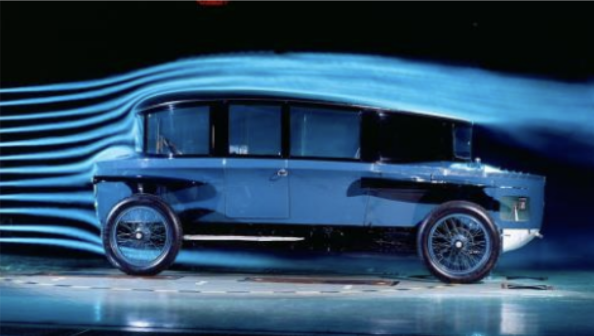

Physics • Aerodynamics
Why air matters: The hidden physics behind car
Introduction
For decades engineers thought that the bigger the engine of a car the faster it goes hence why the V12 engine which is of the most powerful was engine designed as early as 1904. But cars back then were nowhere near as fast as cars now even cars like the Ferrari F80 which is a car with only a V6 which half as many cylinders as the cars back then. But why?
When the plane was first invented by the Wright brothers in 1901 people believed the wing was only for lifting an object from the ground until the 1920s where initial experiments with cars like the Rumpler-Tropfenwagen(figure.1 left) and the Persu Streamliner(figure.1 right) were among the first cars designed with aerodynamic principles.

Figure 1 (left)
Figure 1 (right)
This led to a new field in car engineering called fluid dynamics. But what really is fluid dynamics? Fluid dynamics is the study of how objects interfere with fluids like air or water. Since air is made up of a lot of particles when we run or drive, we disturb these particles causing something called drag which slows us down.
The Basics of Fluid Dynamics
To understand how fluid dynamics affects cars, it’s important to grasp a few key ideas. When air flows around a car, it can move smoothly in layers which is known as laminar flow, or it can become chaotic and irregular which is known as turbulent flow. Smooth airflow is generally more efficient, while turbulence increases resistance.
Another key idea is pressure. According to Bernoulli's Principle, faster-moving air has lower pressure than slower-moving air. This difference in pressure is what allows engineers to manipulate airflow around a car.
Two main forces come into play here, drag and lift. Drag is the resistance a car experiences as it moves through air, while lift is a force that can push the car upwards, reducing its grip on the road. In high-performance vehicles, engineers aim to create the opposite of lift which is what we call downforce which pushes the car downward and improves stability.
Aerodynamic Drag and Efficiency
Drag is one of the biggest challenges in car design. The faster a car travels, the more air resistance it encounters, and this resistance increases rapidly with speed. This means that at high speeds, a large portion of a car’s engine power is used simply to overcome drag.
There are two main types of drag, pressure drag and skin friction. Pressure drag is caused by the shape of the car and how air flows around it, while skin friction is caused by air rubbing against the surface of the vehicle.
To measure how aerodynamic a car is, engineers use something called the drag coefficient, or Cd. A lower Cd value means the car can move through air more easily. Modern car manufacturers such as Tesla and Toyota invest heavily in reducing drag, especially for electric vehicles where efficiency directly affects driving range.
For example, a boxy vehicle like an SUV creates more drag than a sleek sports car because it disrupts airflow more significantly. This is why modern cars are often designed with smooth curves and sloping roofs—to allow air to flow more easily over the body.
Downforce and High-Speed Stability
While reducing drag is important, performance cars also need to remain stable at high speeds. This is where downforce comes in. Downforce is essentially the opposite of lift. It pushes the car down onto the road, increasing grip and allowing for better handling.
This concept is especially important in motorsport, particularly in Formula 1. F1 cars are designed to generate enormous amounts of downforce, allowing them to take corners at incredibly high speeds without losing control.
Key components used to generate downforce include front splitters, rear wings, and diffusers. These parts are carefully shaped to control how air moves around and under the car. For instance, a rear wing works by creating a pressure difference between its upper and lower surfaces, pushing the car downward.
However, there is a trade-off. Increasing downforce also increases drag, which can reduce top speed. Engineers must therefore find a balance between grip and speed depending on the purpose of the vehicle.
Design Features That Control Airflow
Modern cars are full of features specifically designed to manage airflow. The overall shape of the vehicle plays a major role, but smaller details are just as important.
Air vents and ducts are used to direct air where it is needed, such as towards the engine or brakes for cooling. Underbody panels help smooth airflow beneath the car, reducing turbulence and drag.
Some high-performance vehicles even use active aerodynamics, where components adjust automatically depending on speed and driving conditions. For example, hyper- cars like the Bugatti Bolide use adjustable rear wings that can change angle to increase downforce when needed or reduce drag at higher speeds.
Airflow is not only important on the outside of the car but also inside it. Efficient cooling systems rely on carefully controlled airflow to prevent engines and brakes from overheating.
Testing and Simulation
To design efficient vehicles, engineers rely on both physical testing and computer simulations. Wind tunnels are one of the most important tools in aerodynamic testing. In a wind tunnel, a stationary car is exposed to controlled airflow, allowing engineers to observe how air moves around it.
In addition to physical testing, modern engineers use Computational Fluid Dynamics (CFD). This involves using powerful computers to simulate airflow digitally, making it possible to test many different designs quickly and efficiently.
CFD has revolutionised car design by reducing development time and cost, while also allowing for more precise optimisation of aerodynamic performance.
The Future of Car Fluid Dynamics
As technology advances, fluid dynamics is becoming even more important in car design. Electric vehicles rely heavily on aerodynamic efficiency to maximise range.
Future designs may include more advanced active aerodynamic systems and even vehicles that can change shape to adapt to different driving conditions. Autonomous vehicles may also benefit from new designs that prioritise efficiency over traditional styling.
Sustainability is another key factor, as improving aerodynamics can reduce energy consumption and lower environmental impact.
Conclusion
In modern automotive engineering, speed and performance are no longer determined solely by engine power. Instead, the way a car interacts with the air around it plays an equally important role.
From reducing drag to increasing downforce, fluid dynamics influences nearly every aspect of a car’s design. It affects how fast a car can go, how efficiently it uses energy, and how safely it can handle at high speeds.
As technology continues to evolve, the importance of fluid dynamics will only grow. The cars of the future will not just be powered by engines or batteries, but they will be shaped by the invisible forces of the air itself.